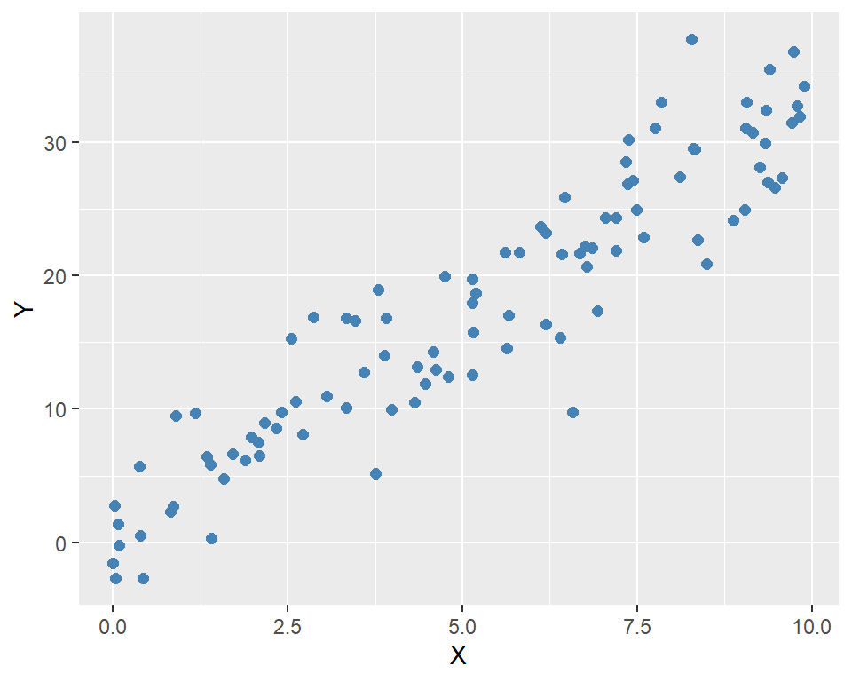
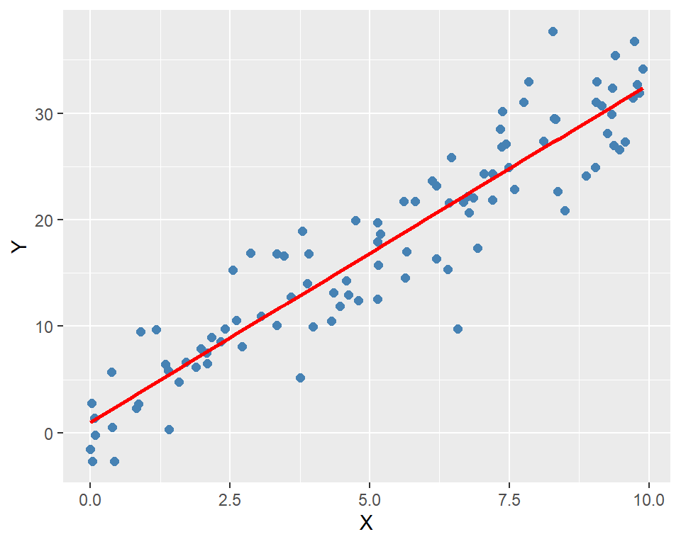
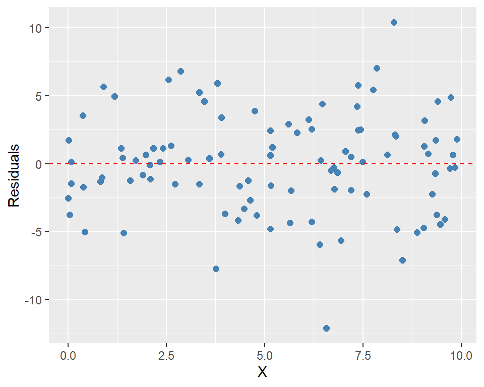

# Load necessary libraries
library(tidyverse)
library(R6)9 Object-Oriented Programming
9.1 Introduction
In this chapter, we introduce the object-oriented programming (OOP) approach. We illustrate the main concepts of the OOP approach by creating a class to estimate and present the results of a simple linear regression model. We also show how to use inheritance to create a new class that extends the functionality of the original class.
9.2 Main concepts
In R, everything is an object, and each object has a class (or type) that defines its behavior and properties. Object-oriented programming (OOP) is a programming paradigm that allows us to create objects with class-specific fields/attributes and methods. In the OOP approach, we first define a class that serves two purposes. First, it acts as a blueprint for creating objects (instances) of that class. Second, it defines the fields (parameters, data, etc.) and methods (functions) that objects of the class will have.
In R, there are alternative OOP systems: (i) S3, (ii) S4, and (iii) R6. The first two approaches are provided by base R, while R6 is provided by the R6 package. Wickham (2019) provides a detailed comparison of these systems. In this chapter, we focus on the R6 system.
We illustrate the OOP approach by creating a class to estimate and present the results of a simple linear regression model. However, before we proceed with the example, we first introduce some main concepts of the OOP approach in R:
- Class: A blueprint for creating objects. It also defines the fields (attributes) and methods for the created objects. We use the
R6Classfunction to define a class in R6. The first argument of this function is the class name, and the second argument is a list of class fields and methods. - Object: An instance of a class (or a realization of the class). It contains fields and functions (methods) that operate on data. The syntax for creating an object is
Object <- ClassName$new(). - Field: A variable that holds parameters and data within an object. Fields are defined in the class and can be accessed and modified using methods. We use
self$fieldNameto refer to a field within the class andobject$fieldNameto return its value. - Constructor: In R6, the constructor is defined using the
initializemethod. The fields are initialized within this method using the syntaxself$fieldName <- value. - Methods: Functions defined within a class and operate on objects of that class. They are defined using the
functionkeyword and can access instance fields and other methods. Methods access instance fields using theselfkeyword, e.g.,self$fieldName. We call a method using the syntaxobject$methodName(). - Inheritance: A mechanism that allows one class (the child class) to inherit the fields and methods of another class (the parent class). In R6, inheritance is achieved by specifying the
inheritargument in theR6Classfunction. - Public and Private Fields/Methods: In R6, fields and methods can be defined as public or private. Public fields/methods can be accessed from outside the class, while private fields/methods can only be accessed from within the class. We use the
publickeyword to define public fields/methods and theprivatekeyword to define private fields/methods.
We illustrate these concepts through the running example given in the next section.
9.3 The running example
To illustrate the OOP concepts provided in the previous section, we consider the following simple linear regression model: \[ Y_i = \beta_0 + \beta_1 X_i + u_i, \quad i = 1, 2, \ldots, n, \] where \(Y_i\) is the dependent variable, \(X_i\) is the independent variable, \(\beta_0\) and \(\beta_1\) are the coefficients to be estimated, and \(u_i\) is the error term.
Let \(\hat{\beta}_0\) and \(\hat{\beta}_1\) be the OLS estimators of \(\beta_0\) and \(\beta_1\). These estimators are defined as follows: \[ \hat{\beta}_1 = \frac{\sum_{i=1}^n (X_i - \bar{X})(Y_i - \bar{Y})}{\sum_{i=1}^n (X_i - \bar{X})^2}, \quad \hat{\beta}_0 = \bar{Y} - \hat{\beta}_1 \bar{X}, \] where \(\bar{X}\) and \(\bar{Y}\) are the sample means of \(X\) and \(Y\), respectively.
Let \(\hat{Y}_i\) be the predicted value of \(Y_i\) and \(\hat{u}_i\) be the residual (the difference between the observed and predicted values of \(Y_i\)). These values are defined as follows: \[ \hat{Y}_i = \hat{\beta}_0 + \hat{\beta}_1 X_i, \quad \hat{u}_i = Y_i - \hat{Y}_i. \] for \(i = 1, 2, \ldots, n\).
In the following code, we generate simulated data for the model. We set \(n=100\), \(\beta_0=2\), and \(\beta_1=3\). The independent variable \(X\) is generated from a uniform distribution between 0 and 10, and the error term \(u\) is generated from a standard normal distribution. Finally, we generate the dependent variable \(Y\) using the model equation.
set.seed(42)
n <- 100
X <- runif(n, min = 0, max = 10) # Independent variable
beta_0 <- 2 # Intercept
beta_1 <- 3 # Slope
u <- 4 * rnorm(n) # Error term
Y <- beta_0 + beta_1 * X + u # Dependent variabledata <- data.frame(
X = X,
Y = Y
)
head(data) X Y
1 9.148060 30.73188
2 9.370754 26.97691
3 2.861395 16.88710
4 8.304476 29.48503
5 6.417455 21.61141
6 5.190959 18.67908ggplot(data, aes(x = X, y = Y)) +
geom_point(color = "steelblue", size = 2) +
labs(
x = "X",
y = "Y"
)
9.4 Defining the OLS class
In the following code, we define the OLS class using the R6 package. We use the R6Class function to create the class and define its fields and methods. There are two arguments to the R6Class function: the class name and a list of class fields and methods. The fields are X, Y, beta_0, and beta_1. The public methods includes initialize, fit, and predict.
initialize: This method is called when a new instance of the class is created. It takes the independent variableXand the dependent variableYas arguments and assigns them to the corresponding fields of the class.fit: This method estimates the model using thelmfunction and then assigns the estimated coefficients to the fieldsbeta_0andbeta_1:self$beta_0 <- coef(model)[1]andself$beta_1 <- coef(model)[2].predict: This method takesnew_Xas input and returns the predicted value ofYusing the estimated coefficients:self$beta_0 + self$beta_1 * new_X.summary: This method prints the estimated regression coefficients and R-squared value.plot: This method creates a scatter plot of the data and adds the fitted regression line.
OLS <- R6::R6Class("OLS",
public = list(
X = NULL,
Y = NULL,
beta_0 = NULL,
beta_1 = NULL,
initialize = function(X, Y) {
self$X <- X
self$Y <- Y
},
fit = function() {
df <- data.frame(X = self$X, Y = self$Y)
model <- lm(Y ~ X, data = df)
self$beta_0 <- coef(model)[1]
self$beta_1 <- coef(model)[2]
},
predict = function(new_X) {
return(self$beta_0 + self$beta_1 * new_X)
},
summary = function() {
cat("Estimated coefficients:\n")
cat("beta_0:", self$beta_0, "\n")
cat("beta_1:", self$beta_1, "\n")
cat("R-squared:", summary(lm(self$Y ~ self$X))$r.squared, "\n")
},
plot = function() {
ggplot(data, aes(x = X, y = Y)) +
geom_point(color = "steelblue", size = 2) +
geom_smooth(method = "lm", se = FALSE, color = "red") +
labs(
x = "X",
y = "Y"
)
}
)
)9.5 Using the OLS Class
To create an instance of the OLS class, we use the new method. This method calls the initialize method, which assigns the independent variable X and the dependent variable Y to the corresponding fields of the class.
# Create an instance of the OLS class
ols_model <- OLS$new(X, Y)
# Check the class
class(ols_model)[1] "OLS" "R6" # Print the object
ols_model<OLS>
Public:
beta_0: NULL
beta_1: NULL
clone: function (deep = FALSE)
fit: function ()
initialize: function (X, Y)
plot: function ()
predict: function (new_X)
summary: function ()
X: 9.14806043496355 9.37075413297862 2.86139534786344 8.304 ...
Y: 30.7318823657064 26.9769066354144 16.8870961227582 29.48 ...Once the object is created, we use the $ operator to access its public fields and methods. To see all public fields and methods, we can use the ls function.
# List all public fields and methods
ls(ols_model) [1] "beta_0" "beta_1" "clone" "fit" "initialize"
[6] "plot" "predict" "summary" "X" "Y" In the following, we return the fields Y, beta_0, and beta_1. Note that beta_0 and beta_1 still take NULL because they have not been estimated yet.
# Access the public fields
head(ols_model$Y)[1] 30.73188 26.97691 16.88710 29.48503 21.61141 18.67908ols_model$beta_0NULLols_model$beta_1NULLThe clone method is used to create a copy of the object. This method is automatically provided by R6 and can be called using the clone function. This can be useful if we want to preserve the original object while making changes to the copy.
# Clone the object
ols_model_clone <- ols_model$clone()
# Check the class
class(ols_model_clone)[1] "OLS" "R6" # Print the object
ols_model_clone<OLS>
Public:
beta_0: NULL
beta_1: NULL
clone: function (deep = FALSE)
fit: function ()
initialize: function (X, Y)
plot: function ()
predict: function (new_X)
summary: function ()
X: 9.14806043496355 9.37075413297862 2.86139534786344 8.304 ...
Y: 30.7318823657064 26.9769066354144 16.8870961227582 29.48 ...In the following, we call the fit method to estimate the model parameters.
# Fit the model
ols_model$fit()
# Check the estimated coefficients
ols_model$beta_0(Intercept)
0.9847724 ols_model$beta_1 X
3.174293 We can use the summary method to print the estimated coefficients and R-squared value.
# Print the summary
ols_model$summary()Estimated coefficients:
beta_0: 0.9847724
beta_1: 3.174293
R-squared: 0.8713067 The predict method can be used to make predictions for new values of X.
# Make predictions
new_X <- c(1, 5, 10)
predictions <- ols_model$predict(new_X)
cat("Predictions for new X values:", predictions, "\n")Predictions for new X values: 4.159065 16.85624 32.7277 Finally, we call the plot method to create a scatter plot of the data with the fitted regression line.
# Plot the results
ols_model$plot()
9.6 Inheritance
We can use the inherit argument in the R6Class function to create a subclass called Residuals that inherits from the OLS class. Here, our original OLS class is the parent class, and the Residuals class is the child class. The syntax for inheritance is inherit = OLS. In this way, the Residuals class will have access to all public fields and methods of the OLS class. We also add two new methods: compute_residuals and plot_residuals to the Residuals class.
# Create a new class called Residuals that inherits from OLS
Residuals <- R6Class("Residuals",
inherit = OLS,
public = list(
residuals = NULL,
compute_residuals = function() {
if (is.null(self$beta_0) || is.null(self$beta_1)) {
stop("Model is not fitted yet.")
}
self$residuals <- self$Y - (self$beta_0 + self$beta_1 * self$X)
},
plot_residuals = function() {
if (is.null(self$residuals)) {
stop("Residuals are not computed yet.")
}
ggplot(data.frame(X = self$X, residuals = self$residuals), aes(x = X, y = residuals)) +
geom_point(color = "steelblue", size = 2) +
geom_hline(yintercept = 0, linetype = "dashed", color = "red") +
labs(
x = "X",
y = "Residuals"
)
}
)
)In the following, we create an instance of the Residuals class and check its class and public fields.
# Create an instance of the Residuals class
residuals_model <- Residuals$new(X, Y)
# Check the class
class(residuals_model)[1] "Residuals" "OLS" "R6" # Print the object
residuals_model<Residuals>
Inherits from: <OLS>
Public:
beta_0: NULL
beta_1: NULL
clone: function (deep = FALSE)
compute_residuals: function ()
fit: function ()
initialize: function (X, Y)
plot: function ()
plot_residuals: function ()
predict: function (new_X)
residuals: NULL
summary: function ()
X: 9.14806043496355 9.37075413297862 2.86139534786344 8.304 ...
Y: 30.7318823657064 26.9769066354144 16.8870961227582 29.48 ...To see all public fields and methods, we can use the ls function. Note that all public fields and methods of the OLS class are also available in the Residuals class.
# List all public fields and methods
ls(residuals_model) [1] "beta_0" "beta_1" "clone"
[4] "compute_residuals" "fit" "initialize"
[7] "plot" "plot_residuals" "predict"
[10] "residuals" "summary" "X"
[13] "Y" In the following, we first use the fit method to estimate the model parameters and use the compute_residuals method to calculate the residuals.
# Fit the model
residuals_model$fit()
# Compute the residuals
residuals_model$compute_residuals()Finally, we can use the plot_residuals method to visualize the residuals.
# Plot the residuals
residuals_model$plot_residuals()
9.7 Private fields and methods
We can use the private argument in the R6Class function to create private fields and methods. These fields and methods cannot be accessed from outside the class. In the following example, we use the syntax private = list(residuals = NULL) to define a private field called residuals. We then use private$residuals to access this field within the class. In this example, we also use super$ to call methods from the parent class.
Residuals <- R6Class(
"Residuals",
inherit = OLS,
private = list(
residuals = NULL
),
public = list(
initialize = function(X, Y) {
super$initialize(X, Y)
private$residuals <- NULL
},
compute_residuals = function() {
if (is.null(self$beta_0) || is.null(self$beta_1)) {
stop("Model is not fitted yet.")
}
private$residuals <- self$Y - (self$beta_0 + self$beta_1 * self$X)
invisible(self)
},
plot_residuals = function() {
if (is.null(private$residuals)) {
stop("Residuals are not computed yet.")
}
ggplot(
data.frame(X = self$X, residuals = private$residuals),
aes(x = X, y = residuals)
) +
geom_point(color = "steelblue", size = 2) +
geom_hline(yintercept = 0, linetype = "dashed", color = "red") +
labs(x = "X", y = "Residuals")
}
)
)In the following, we create an instance of the Residuals class and check its class, and then list its fields and methods.
# Create an instance of the Residuals class
residuals_model <- Residuals$new(X, Y)
# Check the class
class(residuals_model)[1] "Residuals" "OLS" "R6" The output of the ls function does not show the residuals field. This is because the residuals field is private and cannot be accessed from outside the class.
# List all public fields and methods
ls(residuals_model) [1] "beta_0" "beta_1" "clone"
[4] "compute_residuals" "fit" "initialize"
[7] "plot" "plot_residuals" "predict"
[10] "summary" "X" "Y" In the following, we fit the model, compute the residuals and then plot them.
# Compute the residuals
residuals_model$fit()
residuals_model$compute_residuals()# Plot the residuals
residuals_model$plot_residuals()
However, if we use residuals_model$residuals, we will get NULL because the residuals field is private and cannot be accessed from outside the class.
# The following returns an error
residuals_model$residualsNULL9.8 Saving and loading the class
In our current session, the OLS class is available for our use. The class of the OLS is R6ClassGenerator.
# Check the class
class(OLS)[1] "R6ClassGenerator"We can save the class definition to a file for use in future or other sessions. The class definition, along with all its dependencies, can be placed in a file named OLS.R. We can then use the source function to load it into an R session.
# Load the OLS class
source("OLS.R")